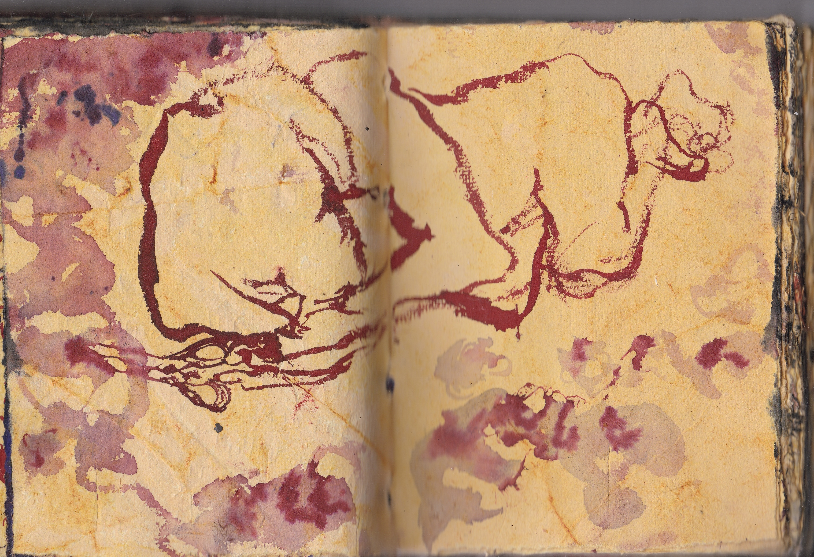
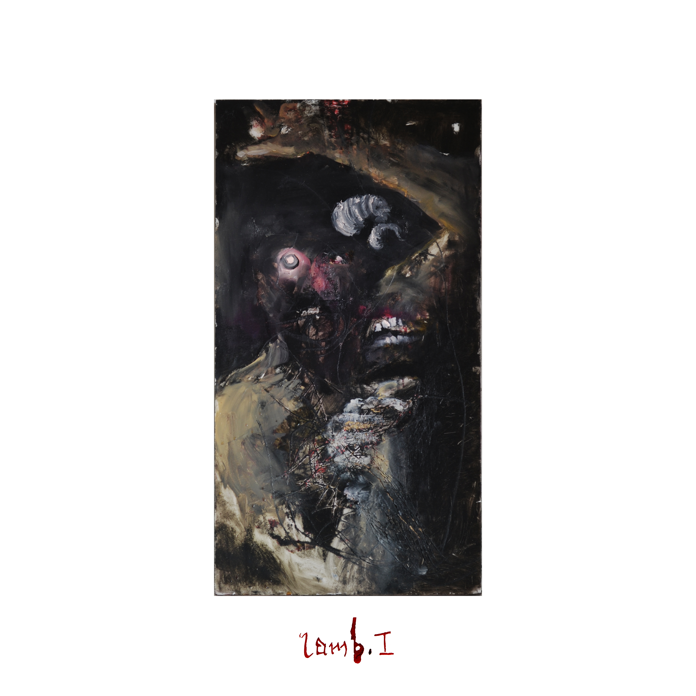
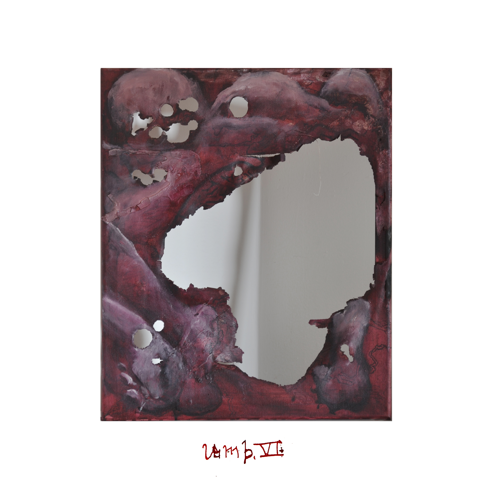
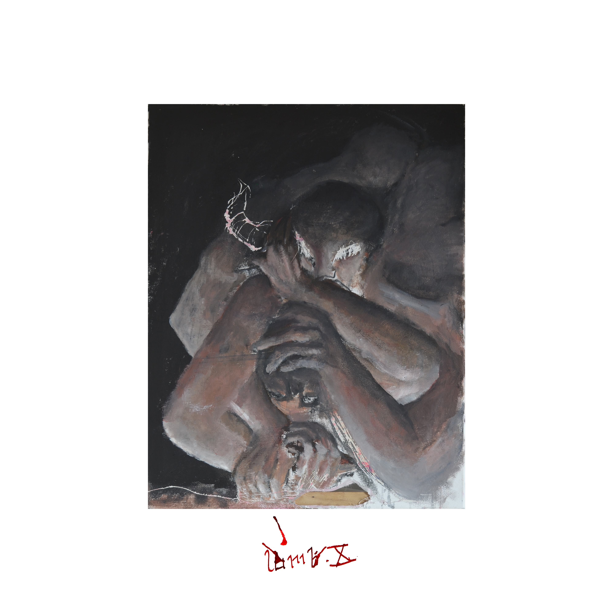

lamb. is a confrontation of the human animal, a contemplation on the violence it is subjected to, and an all-encompassing multidisciplinary work that places the viewer in a conceptual reconstruction of the artist’s own ruin.
Utilising formal degradation against her own work as a structural symbolic force, the artist melds her experience of pain with her training as a biologist to evoke an atmosphere of carnage and brutality across various forms. As an installation and durational performance, it chronicles Petal’s psychosis and psychiatric admission following rape, domestic abuse, and three surgeries. lamb. is presented through endurance, text, visual, and sonic components:
Endurance
At the centre of the space lies the artist’s trans body-as-meat. Surrounded by wool, and clutching shears in penitential meditation for six hours a day, Petal holds absolving silence for all who devoured her. Each hour, she turns toward one of six clusters of paintings — the Seals of Revelation — marking time as ritual.
Text
Two epistolary grimoires bookend the room — Ingestion in the north, Defecation in the south. In these grotesque leather-bound accounts of unravelling, Petal’s hypergraphia born of psychosis becomes the medium, capturing the sound and visual works in time — both before and after her admission.
 The lamb. series sits as primary source material inside the pseudo-academic field of Lexicomythography — a metafictional transmedia universe of the artist’s own creation, which includes an ergodic novel of 99,666 words, downloadable in PDF format, allowing the work to escape the space and be explored by viewers on leaving. [ɤ]
The lamb. series sits as primary source material inside the pseudo-academic field of Lexicomythography — a metafictional transmedia universe of the artist’s own creation, which includes an ergodic novel of 99,666 words, downloadable in PDF format, allowing the work to escape the space and be explored by viewers on leaving. [ɤ]

Visual
In the remaining directions of the room’s clock face, paintings in oil and wax,

layered over underpaintings of sterilised blood and saliva

hang on reclaimed wood and are clustered into six groups, representing each of the Seals opened by the Lamb in the book of Revelation.

Scarred by burning, chiselling, scratching, nailing, and stitching,

the visual pieces sew together the artist’s cycle of trauma.
Sound
Finally, Petal’s full-length album punctuates the experience, optionally accessed in a track-per-piece modality, or as an elegiac totality while walking the Slaughterhouse Raceway. lamb.’s album welds the work into a mythopoeic whole — an exegesis on trauma recovery, through redemptive suffering of trans embodiment.
Preview of the first two tracks below.Through this culmination of efforts, Petal uncomfortably attempts to purge her assailant’s rabid punishment, through the mercy of presence.
“Here I am, still. I am here still. I am still here.”
Titles, Groupings, Dimensions (cm)
Oil Works
- THE FIRST SEAL: “Come and see.” — lamb. I, II (each 56 x 29, reclaimed bookshelves)
- THE SECOND SEAL: “A great sword.” — lamb. III (reclaimed tabletop, 89 x 44.5), IV (oil & pyrography, reclaimed tabletop, 76 x 44)
- THE THIRD SEAL: “Thrice two pounds.” — lamb. V, VI, VII (each 50 x 41, canvas triptych)
- THE FOURTH SEAL: “With the beasts.” — lamb. VIII (heavy reclaimed wood from unknown broken furniture, 94 x 50)
- THE FIFTH SEAL: “The testimony held.” — lamb. IX (canvas, 23 x 30), X (canvas, 79 x 60)
- THE SIXTH SEAL: “Her untimely figs.” — lamb. XI (canvas, 150 x 50), XII (canvas, 138 x 44) (diptych)
Grimoires
- INGESTION: “And the heaven departed.” | 18 x 13cm, 165 pages.
- DEFECATION: “As a book folded up.” | 20 x 15cm, 106 pages.
Durational Centrepiece
- WRATH OF THE LAMB: “who shall be able to stand.” | wool, shears, the trans body, silence. 6 hours per day.
[ɤ]: The Lexicomythographic universe itself provides commentary on the exclusionary nature of academic publication, destabilising the context of the series as it pertains to belief. The survivor, painted as unreliable narrator of their own story, faces relentless pressure to provide proof of their own experience. This pressure compounds the harm. The blurring of confessional vulnerability with complex fictional frameworks forges a therapeutic aesthetic distance, as the artist places herself both within and outside of her own assault, in a superpositional expression of radical forgiveness — for both self and other.